Chapter 9 PROJETO FINAL
Meu projeto final foi inspirado no clássico jogo Genius, que desafia os jogadores a memorizarem sequências de cores e sons. Originalmente, o jogo possuía botões coloridos que emitiam sons harmônicos e se iluminavam em sequência, e a tarefa era repetir essa sequência sem cometer erros. A segui temos as etapas do projeto.
9.1 Planejamento e Conceito:
Para começar, estudei como o jogo funcionava. Com base nos materiais disponíveis, decidi usar um Arduino Nano para controlar tudo. Optei por quatro botões, cada um com um LED de cor correspondente, e um buzzer para os sons. O buzzer foi escolhido por sua capacidade de alterar o som pela sua frequência, o que permite controlar os tons através do Arduino.
9.2 Montagem e Testes na Protoboard:
A primeira etapa foi montar e testar o circuito na protoboard. Isso facilitou a montagem inicial do circuito, possibilitando ajustes e testes conforme avançava no projeto.
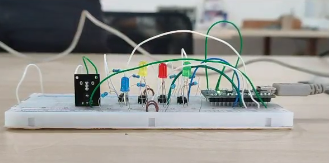
9.3 Explicação do Código:
Definição de Notas e Melodia: No início do código, são definidas as notas musicais que serão usadas na melodia do jogo. Cada nota tem um valor associado que representa sua frequência sonora e uma duração que indica por quanto tempo ela deve ser tocada.
Setup() - Configuração Inicial:
A função setup() é responsável por configurar o ambiente inicial do jogo.
Inicia a comunicação serial para debug (Serial.begin(9600)).
Gera uma semente aleatória para gerar a sequência de cores e sons (randomSeed(analogRead(0))).
Define os pinos dos LEDs e do buzzer como saídas (pinMode()).
Em seguida, reproduz a melodia definida no início do jogo usando o buzzer, tocando cada nota na sequência.
Loop() - Execução Contínua:
O loop principal (loop()) do programa continua executando repetidamente enquanto o Arduino estiver ligado.
Dentro deste loop, o código verifica constantemente as ações do jogador e controla a sequência de LEDs e sons para o jogo.
9.4 Funcionamento do Jogo:
Geração da Sequência: Uma sequência aleatória de LEDs é gerada e mostrada para o jogador através de piscadas e sons correspondentes.
Entrada do Jogador: O jogador deve repetir a sequência pressionando os botões corretos na ordem correta.
Feedback Visual e Sonoro: Cada botão pressionado acende o LED correspondente e emite um som característico através do buzzer.
Verificação de Acertos: O programa verifica se a sequência de botões pressionados pelo jogador corresponde à sequência gerada aleatoriamente.
Final do Jogo: Se o jogador errar a sequência, o jogo reinicia, mostrando uma animação e emitindo sons indicando o fim do jogo.
9.5 Idealização do produto final
Após conseguir fazer o circuito funcionar e finalizar o código, o próximo passo foi planejar o projeto final do Genius, pensando em transformá-lo em um produto completo. Isso envolveu decidir a disposição dos botões e LEDs, como integrar o circuito com o Arduino e planejar a alimentação de todo o sistema.
A ideia central foi criar uma caixa para o jogo. Na parte superior da caixa, seria colocada uma superfície onde os botões poderiam ser pressionados. Cada botão seria acompanhado por dois LEDs, totalizando 8 LEDs de 4 cores diferentes. O Arduino ficaria na parte inferior da caixa, alimentado por uma bateria de 9 volts.
Para manter os botões separados da placa principal do Arduino e reduzir a necessidade de muitos jumpers (fios de conexão), foi necessário criar um circuito para cada botão. Cada circuito incluiu os dois LEDs associados ao botão, além de dois resistores separados, um para os LEDs e outro para o botão.
9.6 Projeto do Circuito Impresso (PCB):
Após isso foi necessário fazer o diagrama das conexões elétricas no EasyEDA, de modo para fazer o circuito impresso.
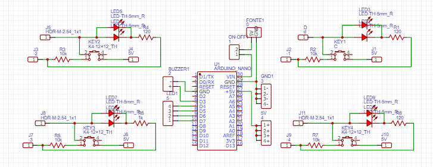
Depois de finalizar o diagrama das conexões elétricas no EasyEDA, o próximo passo foi transformá-lo em um projeto de circuito impresso (PCB). Uma das principais dificuldades foi organizar os componentes de forma compacta e eficiente para facilitar as interconexões. Isso foi crucial para garantir que o circuito funcionasse corretamente e ocupasse o menor espaço possível na placa. Após planejar a disposição dos componentes, foi feita a conexão das trilhas e o layout final da placa, como mostrado na figura a seguir.
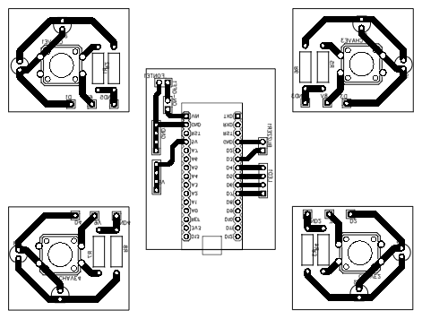
No EasyEDA também é possível obter um a visualização do circuito em 3D, como visto na imagem a seguir.
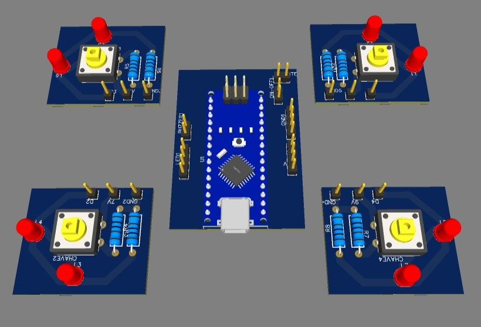
9.7 Fabricação do Circuito Impresso:
Para fazer a fabricação das placas eu optei por fazer através do método de corrosão, pois a fresadora 3018 ainda estava em fase de manutenção. Então para isso foi necessário exporta o arquivo em SVG, e abrir ele no Inkscape, fazendo as devidas configurações, colocando o contorno nas trilhas, para que o laser passasse. Após isso foi cortado pedaços de fenolites cobreados na superfície, e colocado o vinil adesivo; e posteriormente levado ao laser para destacar as trilhas das placas, utilizando o laser com uma potência de 8%. No final obtive as placas e destaquei o vinil onde foi cortado e deixei só a parte das trilhas.
Depois disso preparei a solução para corrosão, utilizando percloreto de ferro e água, sendo na proporção de 1 para 4 respectivamente, de maneira obtiver as placas de circuitos impresso.
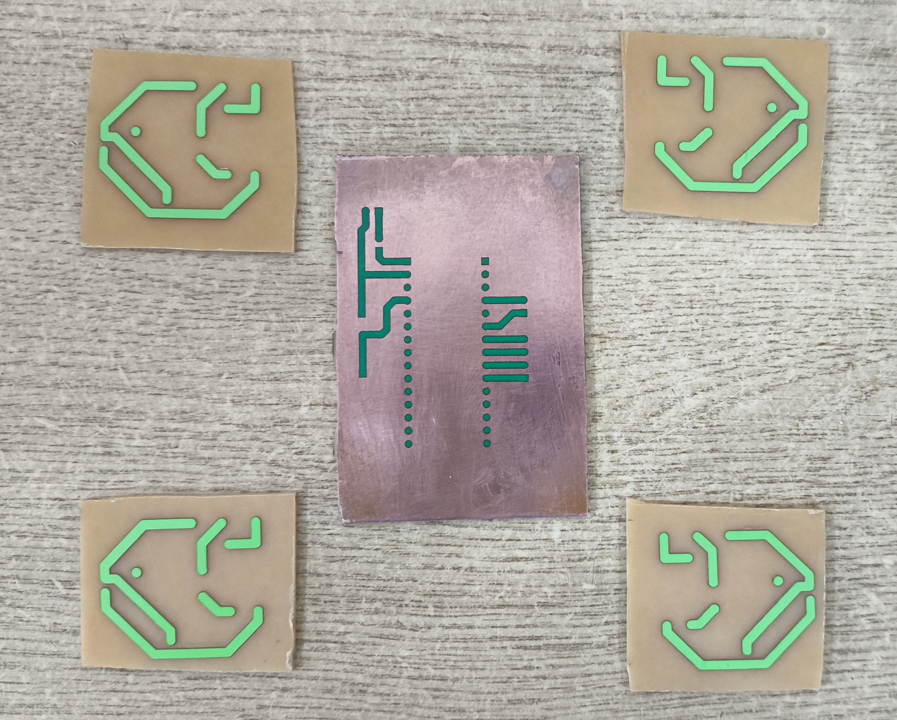
A próxima etapa foi pegar as placas e fazer os furos de maneira manual aonde vão ficar os componentes, que nesse caso foi utilizado o furador do laboratório próprio para isso, na imagem a seguir temos as placas já furadas.
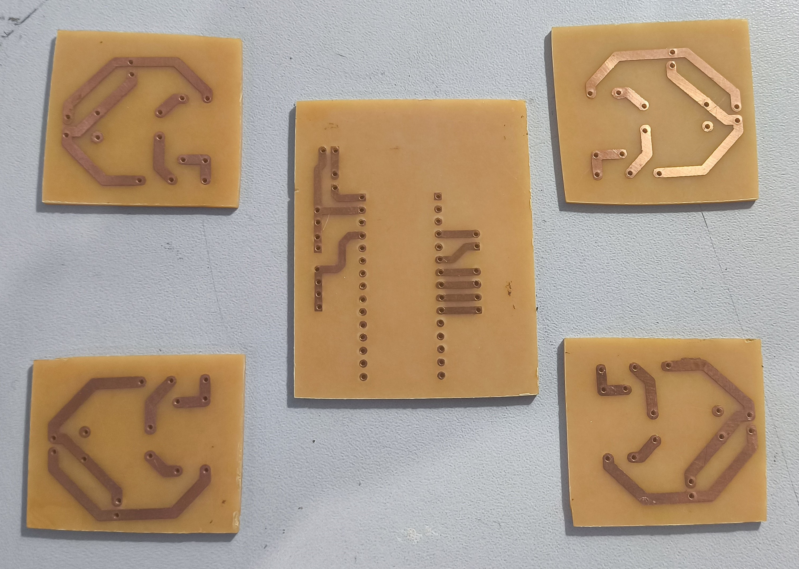
9.8 Montagem e Soldagem da PCB:
Soldar os componentes eletrônicos foi a próxima etapa. Realizei testes de continuidade para detectar possíveis erros, como mau contato. Na imagem, estou mostrando o processo de soldagem dos componentes e as cinco placas já finalizadas.
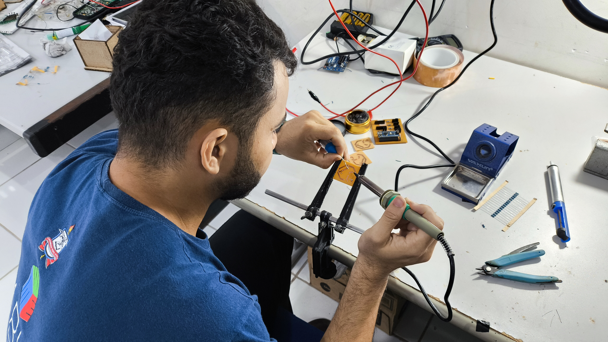
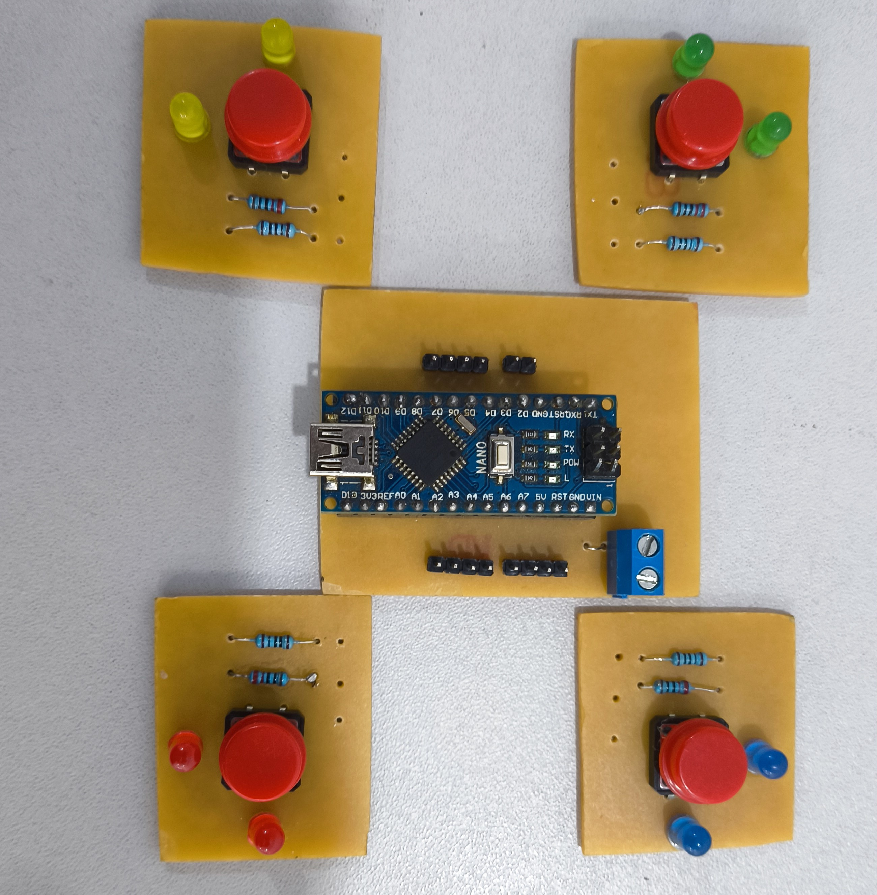
Em seguida, conectei as cinco placas entre si e à placa principal, que é alimentada por uma bateria de 9 volts e possui uma chave liga/desliga. Testei todas as conexões e ajustei o código conforme necessário, garantindo que tudo funcionasse perfeitamente.
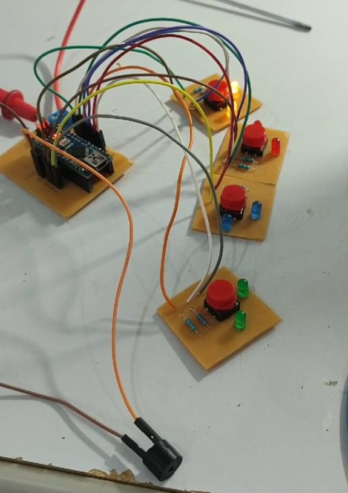
9.9 Design da Caixa:
Após garantir que o sistema elétrico e o código estavam funcionando perfeitamente, o foco seguinte foi desenvolver a parte mecânica e estética do projeto. Para começar, utilizei o MakerCase para criar a caixa nas dimensões desejadas. Em seguida, fiz ajustes estéticos, como a inclusão do logo e nome do FABLAB, além do nome GENIUS. Também foram feitas modificações mecânicas essenciais, como a criação do espaço para as teclas dos botões, a abertura para a chave liga-desliga, o posicionamento para a saída do buzzer e uma entrada para o Arduino, possibilitando futuras melhorias ou correções no código. Optei por construir a caixa em MDF. Na imagem abaixo, é possível visualizar o arquivo que gerou o modelo da caixa.
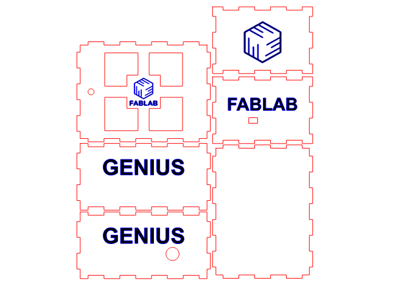
Com a estrutura da caixa finalizada, o próximo desafio foi projetar as teclas para pressionar os botões. Decidi utilizar teclas de acrílico para permitir a visualização das luzes emitidas pelos LEDs. Para garantir que os botões ficassem suspensos de maneira adequada, desenvolvi uma base que mantém os botões na posição correta, como mostrado na imagem a seguir.
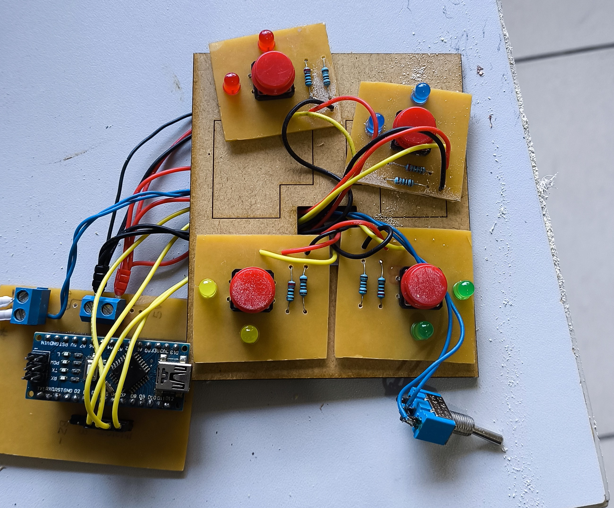
Para manter as teclas no lugar, foi necessário cria um sistema na tampa da caixa, que as teclas ficariam entre duas peças, onde ela se movimentaria, mas sem sair do lugar, na imagem a segui temos o desenho que foi feito essa peça, sendo a parte de dentro a menor é a parte de baixo, e parte maior é a parte de cima.
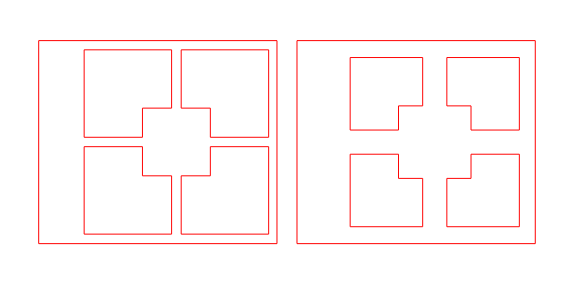
9.10 Montagem Final:
Com todos os detalhes resolvidos, chegou o momento de montar a caixa de fato. Na estrutura vazia da caixa, foram adicionados apoios nos cantos para segurar a base dos botões, como pode ser observado na imagem a seguir.
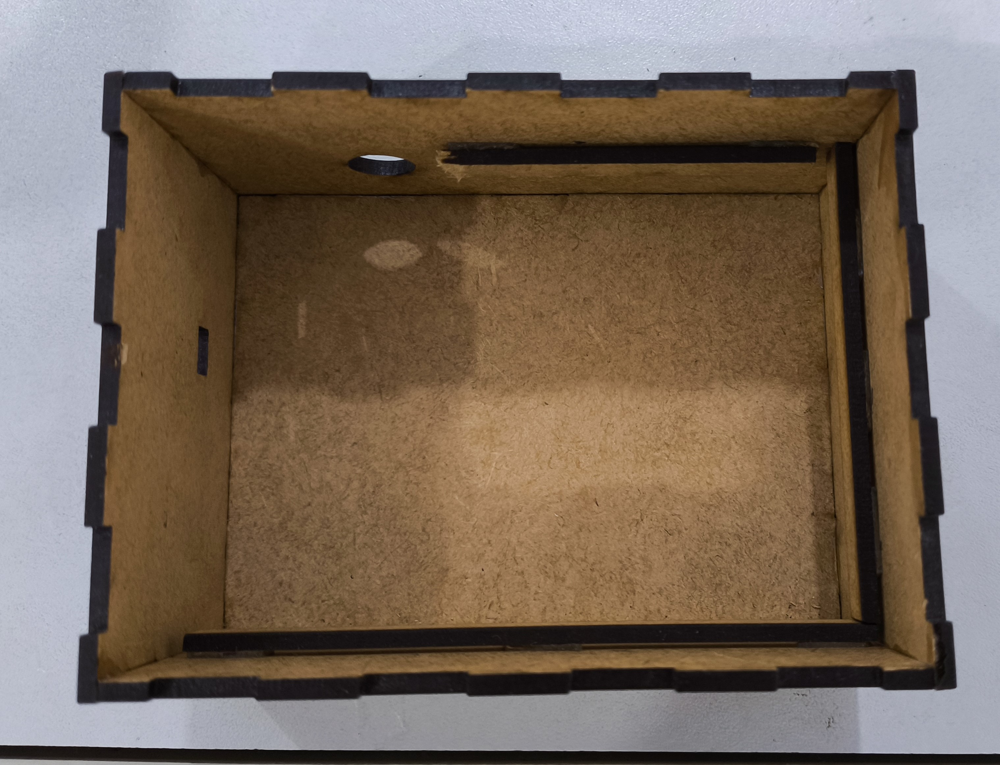
Em seguida, a placa principal e a bateria foram instaladas na parte inferior da caixa, conforme mostrado na imagem a seguir.
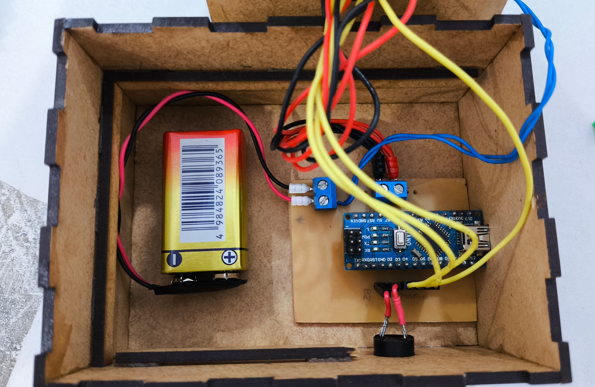
Posteriormente, os botões e os LEDs com suas bases foram posicionados sobre os suportes preparados, como mostrado na imagem.
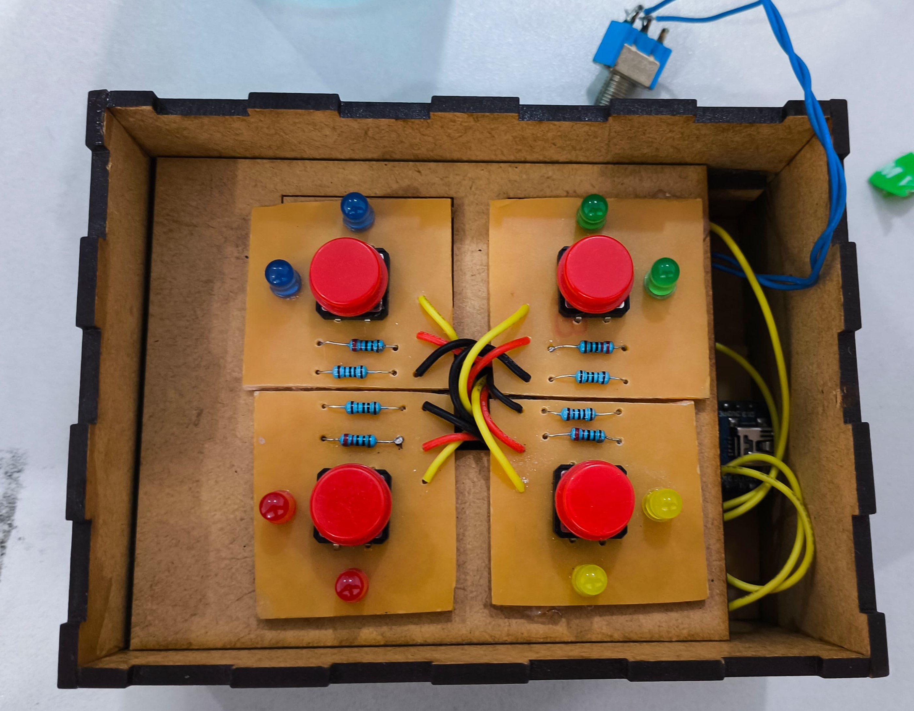
Por fim, a tampa da caixa foi colocada, onde estão as teclas e a chave liga-desliga, como ilustrado na imagem final. Com todos os componentes montados, temos um jogo GENIUS funcional. A cada rodada, sequências aleatórias são apresentadas, proporcionando diversão ao usuário. A seguir, algumas imagens do produto final.
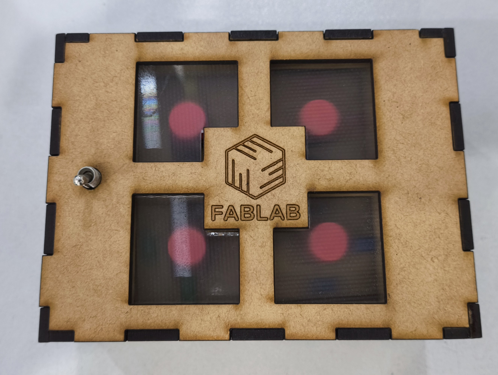
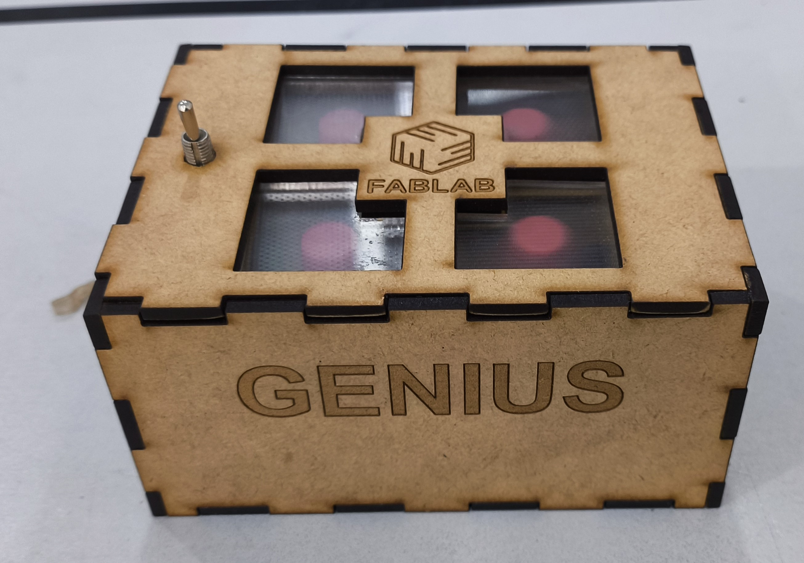
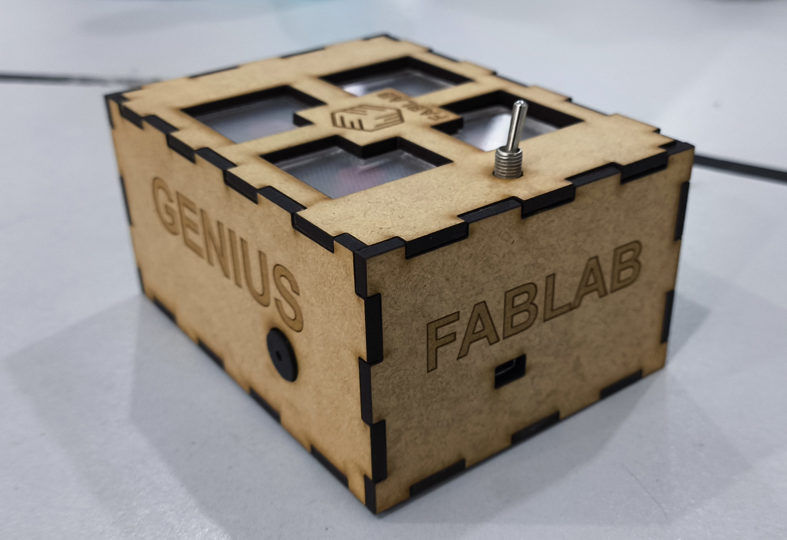
Como monitor da disciplina, também participei ativamente no desenvolvimento dos projetos dos meus colegas. Isso incluiu auxiliar na criação de circuitos impressos, orientar na produção de peças utilizando impressoras 3D e o laser, oferecer suporte na parte mecânica dos projetos e ajudar com o código, além de prestar outras formas de assistência necessárias.